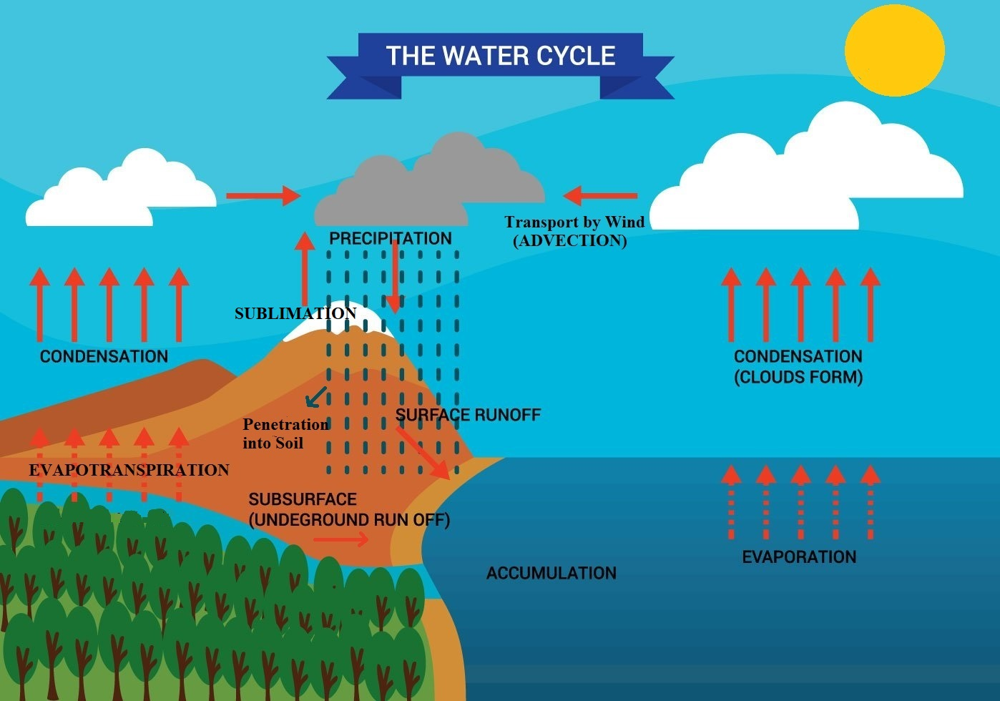

Water
Water is an essential component of all life forms that exist
over the surface of the earth. Water is a rare commodity in our
solar system. The earth, fortunately has an abundant supply of
water on its surface. Hence, our planet is called the
‘Blue Planet’.
Though water covers 71% of the Earth's surface, most of it is in
seas and oceans and not suitable for drinking. The total volume
of water on Earth is estimated at 1.388 billion km³, with 97.5%
being salt water and 2.5% being fresh water.
| Source of Water |
% of total water |
| Oceans |
96.5 |
| Ice Caps and Glaciers |
1.76 |
| Groundwater |
1.69 |
| Soil Moisture |
0.0012 |
| Lakes |
0.013 |
| Atmosphere |
0.00093 |
| Streams and Rivers |
0.0001 |
| Biosphere |
0.00008 |
Hydrological (Water) Cycle

The water cycle or hydrological cycle refers to the continuous
exchange of water within the hydrosphere, the atmosphere, soil
water, surface water, groundwater, and plants in different forms
i.e. the liquid, solid and the gaseous phases. The water cycle
has been working for billions of years and all the life on earth
depends on it.
The distribution of water on earth is quite uneven. Many
locations have plenty of water while others have very limited
quantity. Renewable water on the earth is constant while the
demand is increasing tremendously. This leads to water crisis in
different parts of the world — spatially and temporally. The
pollution of river waters has further aggravated the crisis.
Water moves perpetually through each of these regions in the
Water cycle consisting of the following transfer processes:
-
Evaporation: Water at the surface gets heated up by
the Sun and forms water vapor which rises and condenses to
form Clouds. Evapotranspiration (or simply
transpiration) is a form of evaporation that occurs through
the plants. Sublimation is another variant of
evaporation, where snow or ice changes directly into water
vapour without becoming water.
-
Condensation: The water vapour formed from the
evaporation, rises up, cools down and condenses to form
clouds.
-
Precipitation: As the clouds capacity to hold water
reaches maximum, it comes down on to the earth as
precipitation i.e., rain, snow, hail etc.
-
Infiltration or Penetration: Rainwater gets absorbed
into the ground through the process of infiltration. The level
of absorption varies based on the material the water has
seeped into. For instance, rocks will retain comparatively
less water than soil.
-
Runoff: Rain water on the downslopes, sides of
mountains, hills etc. runoff due to gravity eventually
accumulate forming lakes, rivers, seas and oceans. Groundwater
can also flow (sub-surface runoff) into streams or rivers. But
sometimes, it might just sink deeper, forming aquifers.
Temperature of ocean Waters
Ocean waters get heated up by the solar energy just as land. The
process of heating and cooling of the oceanic water is slower
than land.
Factors Affecting Temperature Distribution
-
Latitude: the temperature of surface water decreases
from the equator towards the poles because the amount of
insolation decreases poleward.
-
Unequal distribution of land and water: the oceans in
the northern hemisphere receive more heat due to their contact
with larger extent of land than the oceans in the southern
hemisphere.
-
Prevailing wind: the winds blowing from the land
towards the oceans drive warm surface water away form the
coast resulting in the upwelling of cold water from below. It
results into the longitudinal variation in the temperature.
Contrary to this, the onshore winds pile up warm water near
the coast and this raises the temperature.
-
Ocean currents: warm ocean currents raise the
temperature in cold areas while the cold currents decrease the
temperature in warm ocean areas. Gulf stream (warm current)
raises the temperature near the eastern coast of North America
and the West Coast of Europe while the Labrador current (cold
current) lowers the temperature near the north-east coast of
North America.
-
Depth of the Ocean: Maximum temperature of the oceans
is always at their surfaces because they directly receive the
heat from the sun and the heat is transmitted to the lower
sections of the oceans through the process of convection. It
results into decrease of temperature with the increasing
depth, but the rate of decrease is not uniform throughout. The
temperature falls very rapidly up to the depth of 200 m and
thereafter, the rate of decrease of temperature is slowed
down.
Salinity of Ocean Water
All waters in nature, whether rain water or ocean water, contain
dissolved mineral salts. Salinity is the term used to define the
total content of dissolved salts in sea water.
It is calculated as the amount of salt (in gm) dissolved in
1,000 gm (1 kg) of seawater. It is usually expressed as parts
per thousand or ppt. Salinity is an important property of sea
water. Salinity of 24.7 ppt has been considered as the upper
limit to demarcate ‘brackish water’.
The average salinity of Indian Ocean is 35 ppt.
Factors affecting ocean salinity
-
The salinity of water in the surface layer of oceans depend
mainly on evaporation and precipitation.
-
Surface salinity is greatly influenced in coastal regions by
the fresh water flow from rivers, and in polar regions by the
processes of freezing and thawing of ice.
-
Wind and ocean currents also influences salinity of an area by
transferring water to other areas.
Salinity, temperature and density of water are interrelated.
Hence, any change in the temperature or density influences the
salinity of water in an area
Highest salinity in water bodies
-
Gaet'ale Pond, Ethiopia with 433 ppt salinity is the
saltiest water body.
-
Dead Sea, 337 ppt (bordered by Jordan to the east and Israel
and the West Bank to the west).
- Great Salt Lake in US, 142 ppt.